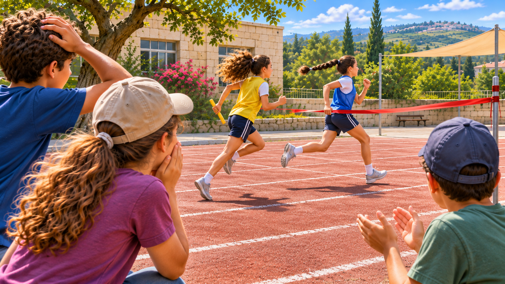

צילום מרחוק
אירוע ספורט
הרגע נגמר. הוויכוח רק התחיל.

שתי חולצות בקו הסיום
כל בית הספר הריע כששני הרצים האחרונים במרוץ השליחים התקרבו לקו הסיום. דניאל בת האחת־עשרה ישבה באזור הקהל, בקצה החצר. היא ראתה חולצה צהובה וחולצה כחולה מתקרבות זו לזו — ואז כולם סביב קמו בבת אחת.
"הצהובים ניצחו!" צעק ילד מאחוריה. "ממש לא, הכחולים!" ענתה חברה. דניאל עצמה לא הייתה בטוחה. ברגע החשוב ביותר הסתירו לה כתפיים וידיים את הקו.
התמונה שלא הכריעה
אחד ההורים הראה למורה תמונה שצילם בהסכמת בית הספר. בתמונה שני הרצים קרובים מאוד לקו, אבל רגליהם מטושטשות ואי אפשר לדעת אם הצילום נעשה לפני החצייה או אחריה.
הצוות האחראי למרוץ קבע את התוצאה לפי כללי האירוע, והילדים קיבלו אותה. אבל דניאל נשארה עם שאלה אחרת: איך ייתכן שיש צילום של הרגע, ועדיין אי אפשר להבין ממנו בדיוק מה קרה?
שלושה אנשים, שלוש תמונות
בהפסקה דניאל שוחחה עם מי שצפו במרוץ. נועם, שעמד ליד הפנייה, ראה את הכחולים מובילים. מאיה, שעמדה מול קו הסיום, זכרה את הצהובים מתקדמים מהר יותר. דניאל ראתה רק את הסוף, וגם הוא הוסתר לרגע.
שלושתם דיברו בכנות. הבעיה לא הייתה שאחד מהם שיקר, אלא שכל אחד ראה חלק אחר של המסלול. דניאל ציירה את מקומות העמידה שלהם והבחינה שכל נקודת מבט כוללת גם שטחים שאי אפשר לראות ממנה.
מה בדיוק רוצים לדעת?
המורה שאלה: "אם נרצה ללמוד מהמרוץ הבא, מה באמת נרצה לתעד?" דניאל חשבה בתחילה שצריך תמונה יפה של הרצים. אחר כך הבינה שתמונה יפה אינה בהכרח תמונה שמראה את המעבר מעל קו הסיום.
לתיעוד משמעותי צריך לדעת מהו הפרט החשוב, היכן הוא יופיע ומתי הוא עשוי להתרחש. כדאי גם להבחין בין תמונה אחת לבין רצף של רגעים, כי אירוע קצר יכול להתרחש בין שני צילומים.
הפרט שנעלם בשמש
לקראת סוף יום הספורט דניאל חזרה למקום שבו ישבה. עכשיו ראתה שהשמש פונה לכיוון הקהל ושדגל צבעוני עשוי להסתיר חלק מהמסלול כשהרוח מזיזה אותו. צילום מנקודה קבועה לא תמיד ייתן אותה תמונה בכל שעה.
"אז פשוט נצלם מכל כיוון", הציע חבר. דניאל נזכרה שהכניסה למסלול אסורה לצופים ושאין לצלם תלמידים בלי אישור מתאים. היו גם שאלות קשות יותר: איך נדע ששתי תמונות נוצרו באותו רגע? ומה אם בכל אחת מהן נראה רק חצי מההתרחשות?
מה חסר לפני האירוע הבא
דניאל כבר יודעת היכן עובר קו הסיום ומאילו אזורים מותר לצפות. היא אינה יודעת איזו נקודת מבט תהיה ברורה לאורך כל המרוץ, כיצד משתנה התאורה ומתי צריך להתבונן כדי לא להחמיץ את הרגע המבוקש.
היא רושמת במחברת שתי כותרות: "מה רואים?" ו"מה יודעים על התמונה?". מתחת לשנייה היא מוסיפה: מקום, זמן, זווית. פתאום היא מבינה שצילום אינו רק לחיצה על כפתור; צריך גם לדעת מה אפשר להסיק ממנו.
לפני שממציאים
למחרת ילדים אחרים שואלים את דניאל מי ניצח. "כבר הודיעו", היא עונה, "אבל אני מנסה לפתור שאלה אחרת: איך אפשר שלא להחמיץ את הרגע הזה בפעם הבאה?". היא מחייכת — עכשיו יש להם אתגר לחקור, לא ויכוח לסיים.
איזה מידע צריך כדי להבין אירוע קצר ומהיר? מה עלול להסתיר אותו, גם כשיש תמונה? כיצד אפשר לתכנן תצפית בטוחה ולשמור על פרטיות המשתתפים, בלי לקבוע מראש איזה מכשיר ישמש לכך?
רמז מעולם החלל
גם במשימות צילום בחלל מתכננים מה רוצים לראות, מאיזו זווית ומתי. מכשיר צילום מתעד את מה שנמצא בשדה הראייה שלו בזמן התצפית; תצפית שאינה מכסה את המקום או את הרגע המתאים עלולה להחמיץ פרט חשוב. אילו בחירות דומות צריך לעשות במקרה של המרוץ?
אחרי הקריאה — בדף הצוות
שוחחו בצוות וענו על סמך המידע שבכתבה. אם חסר מידע, רשמו שאלה להמשך.
- למי אתם רוצים לעזור בסיפור?
- מה הוא מנסה לעשות ומה מקשה עליו?
- מה הוא צריך להיות מסוגל לעשות?
- מה עוד תרצו לברר לפני שתפתחו רעיונות?